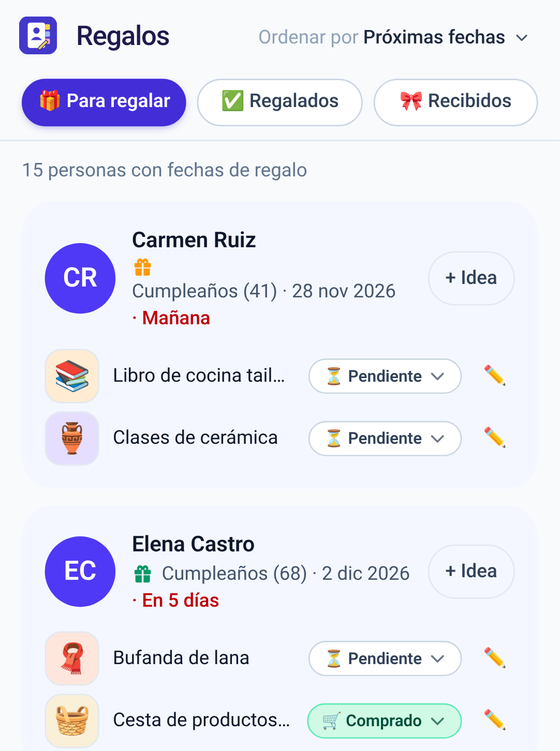
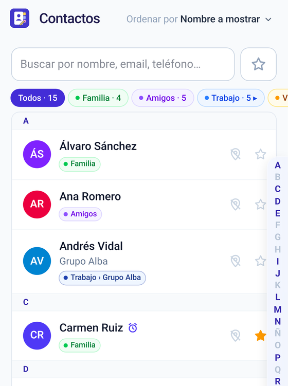
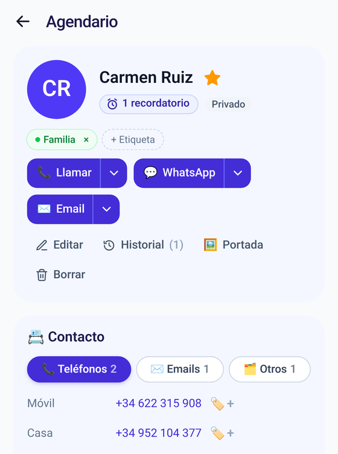
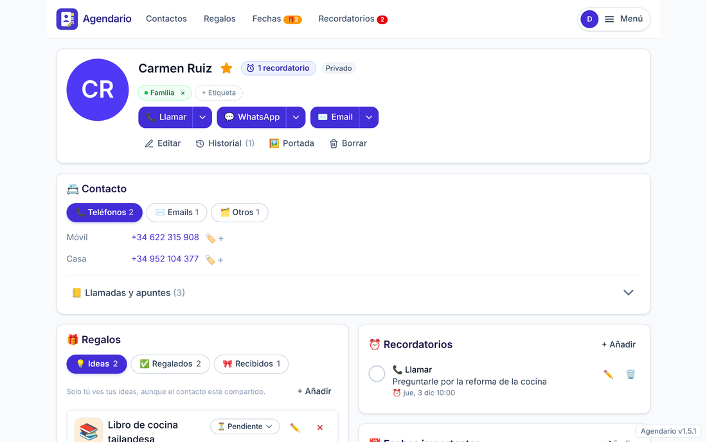

La 1.5.1 no trae funciones grandes: ordena la app para que lo importante esté siempre a la vista y hace la ficha más clara.

Los contactos con recordatorios pendientes llevan un despertador junto al nombre en la lista, aunque todavía no estén en plazo: en color si son para más adelante y en rojo si alguno ya toca.
En la ficha, junto al nombre, aparece «⏰ 1 recordatorio» (o los que haya). Al tocarlo, la ficha baja hasta el recuadro Recordatorios.


Teléfonos, emails y otros datos están ahora en un solo recuadro, 📇 Contacto, con tres pestañas que dicen cuántos datos hay en cada una:
Debajo sigue 📒 Llamadas y apuntes, que se despliega con la flecha. Direcciones (con su mapa), webs y notas siguen en su propio recuadro.
Además, los títulos de cada recuadro (Regalos, Relaciones, Recordatorios, Fechas importantes…) son más grandes, y las flechas para desplegar son más grandes en toda la app (Llamadas y apuntes, árbol de etiquetas, Ajustes…).

bash /opt/actualizar-agendario.sh. En la web se ve al recargar; en el móvil hace falta la APK 1.5.1 (la anterior sigue funcionando con este servidor, pero con la cabecera de antes). La web dagarin.es/agendario estrena capturas, incluida una nueva de Backups.